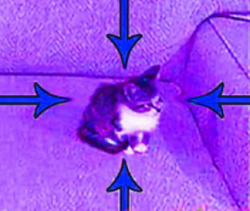
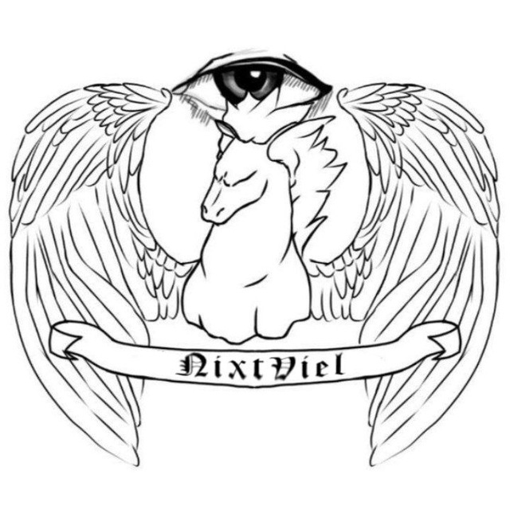

Про проект
Фото головного автора:

Можна знайти мене в Telegram:derfacn
А також Whatsapp: +380979426758
Автор матеріалу з історії
Влад, учень 10-Б класу Вільногірського ліцею №5

Про цей сайт
28.11.2022 [22:12]
Даний проект створено в напрямку розвитку навиків программування одного автору і історичних знань іншого
На сайті розміщується контент з приводу новітьної історії і також мови програмування Python. На разі усі автори проекту
будуть готові в будь-який момент поговорити з вами на будь-яку тему стосовно
історії та
Python
Запрошуємо Вас до Нашої команди!
01.12.2022 [0:30]
Від сьогодні сайт набув свого вигляду і структурованості, і тому запрошуємо всіх небайдужих приєднатись до команди авторів матеріалу або самого сайту! Впевнений, всі,
хто напише
головному автору, точно знайде собі цікаву роботу в ролі творця контенту, або ж спів-автора цього сайту
(при базових знаннях HTML) а також однодумців, з якими можна знайти спільні інтереси і поговорити на цікаві для вас теми.
Приєднуйся!